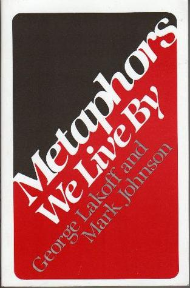
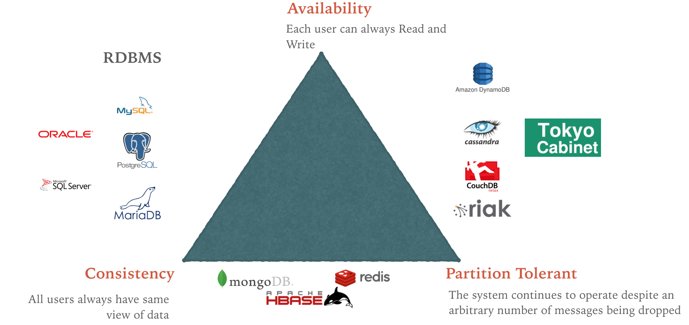

Архитектура. Другой взгляд
Жизнь надо прожить так, чтобы не было мучительно больно за бесцельно прожитые годы
<div className="ib-checkbox">
<input type="checkbox" className="ib-checkbox--input">
</div>
<div className="ib-checkbox">
<input type="checkbox" className="ib-checkbox--input">
</div>
<div className="ib-checkbox">
<input type="checkbox" className="ib-checkbox--input">
</div>
function bemClass(block: string) {
return (element?: string, mods?: object): string => {
if (!element) { return block; }
const result = [getElementClass(block, element)];
if (mods) {
forEach(mods, (needAdd, mod) => {
if (!needAdd) { return; }
result.push(getElementClass(block, element, mod));
});
}
return result.join(' ');
};
}
const bem = bemClass('checkbox');
export default () => (
<div class={bem()}>
<input type="checkbox" className={bem('input')}>
</div>
)
const bem = bemClass('checkbox');
export default () => (
<div class={bem()}>
<input className={classnames({
[bem('input')]: true,
[bem('input', ['checked'])]: this.props.checked
})}>
</div>
)
const bem = bemClass('checkbox');
classnames({
[bem('input')]: true,
[bem('input', ['checked'])]: this.props.checked
})
`ib_checkbox--input
${checked ? 'ib_checkbox--input__checked': ''}`

Архитектура в IT — метафора
Метафора, которой не было...
Луковая архитектура
Metaphors We Live By
George Lakoff and Mark Johnson
Архитектура — совокупность важнейших решений об организации программной системы
https://ru.wikipedia.org/wiki/Архитектура_программного_обеспеченияVuex
Теорема CAP (известная также как теорема Брюера)

Теорема CAP (известная также как теорема Брюера)
Operational transformation
ru.wikipedia.org/wiki/Операциональное_преобразованиеen.wikipedia.org/wiki/Operational_transformation
Доклад про все это
Никита Прокопов — Клиенту и серверу нужно поговорить
youtu.be/uHGeI9_fgUwПро лень
Lean
Lean — концепция управления производственным предприятием, основанная на постоянном стремлении к устранению всех видов потерь
Robert C Martin - Clean Architecture and Design
(database is a detail)
От чего может зависеть архитектура
Евгений Кривошеев, Архитектура как функция от?
youtu.be/K-FtLWc8TxI- Внешние требования
- Внутренние требования
- Регламенты, стандарты
- Вопросы доверия и другие человеческие факторы
- Структура команды (Закон Конвея)
- Время, ресурсы
- Законы, корпоративные ограничения
Схема Закмана
ru.wikipedia.org/wiki/Модель_Закмана
Точки зрения по Закману
- Мотивация
- Люди
- Данные
- Функции
- Место
- Время
Слои по Закману
- Контекст
- Модель бизнеса
- Системная модель
- Технологическая модель
- Детальное представление
Нужно ли использовать дополнительную сущность для генерации css классов в Infobip?
Хоршая архитектура должна быть гибкой!
Хоршая архитектура должна быть гибкой!
Архитектура должна подходить
Выводы
- Архитектура - важные решения
- Ищи ответы уровнем выше
- Лень - двигатель прогресса
Спасибо!
Алексей Золотых
twitter: @zolotyh
telegram: @aazolotyh